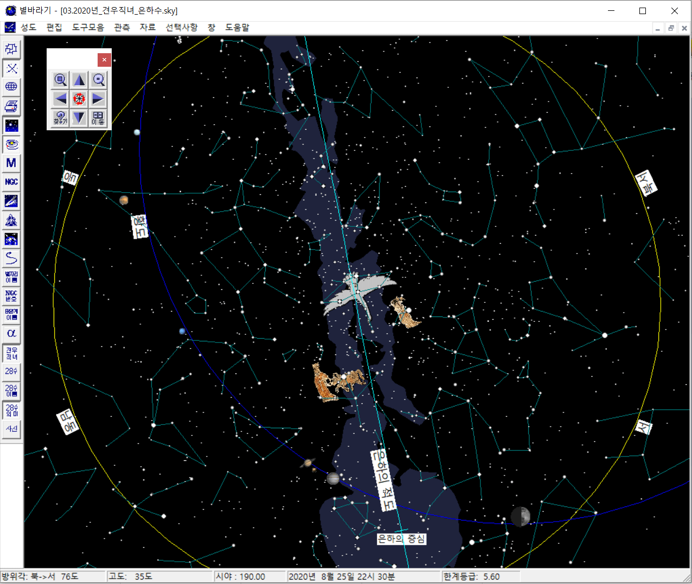

견우와 직녀
노세노세 젊어서 놀아 늙어지며는 못노나니
화무~십일홍이요 달도 차면 기우나니라~~
위 노래 가사를 제대로 실천한 이들이 있었으니, 바로 견우와 직녀이다. 결국 옥황상제의 노여움을 사서 은하수를 사이에 두고 서로 떨어져 지내는 신세가 된다.
이들을 별바라기에서 찾아보고 두 사람의 만남은 왜 칠월칠석이어야 했는지 옛 사람들의 입장에서 상상해 보자.
옛날 옛적 칠흑 같은 여름 밤 하늘을 가로지르는 은하수는 실로 장관이었을거다.
아래 오른쪽 사진과 같은 모습이 온 하늘을 덮는다고 상상해 보자.
이 중에서 가장 밝게 보이는 직녀별을 보며, 견우와 직녀의 애뜻한 이야기가 만들어 졌을 것으로 생각된다.
둘 중 하나가 별이 아닌 행성이라면 모를까,
아무리 봐도 두 별이 만날 방법은 떠오르지 않는다. 사랑하면서 평생을 떨어져 바라보기만 해야 하는 두 별의 처지가 참으로 안타깝다.
|

|
|
|
칠월 칠석 밤 하늘
|
견우/직녀 별과 은하수
|
칠월칠석엔 어떤 마법이 일어날까?
그런데, 칠월칠석에 정말 마법 같은 일들이 일어 난다. 1년 중 견우/직녀 별이 랑데부를 시도할 수 있는 가장 좋은 날이 아닐까 싶다.
옛 사람들의 오랜 관측과 경험을 통해 정해진 날이다.
- 무엇보다 저녁 시간대에 은하수가 하늘의 천정을 지나가며, 이때 견우/직녀 별은 거리가 가장 가까워 보인다.
보름달이 지평선 가까이에서 크게 보이고, 하늘 높이 떠오르면 작게 보이는 것과 같은 이치이다.
- 음력 7월 7일의 달도 특별하다.
- 달의 위상은 반달이고 적당한 달 빛이 있어 사람들이 야외 활동을 하기에 좋다.
- 달이 은하수와 떨어져 있고, 너무 밝은 달이 아니기에 은하수를 보는데 방해되지 않는다.
- 음력 7월은 달의 고도가 낮은 때로, 역시 은하수 관측을 방해하지 않는다. 겨울의 상현 달은 여름보 더 높이 있고 별 관측을 방해한다.
- 음력 7월엔 장마가 끝나고 맑은 하늘을 볼 가능성이 높다.
말 그대로 온 우주가 견우와 직녀의 만남을 돕는 모습이다.
별바라기 활용법
- [자료][날짜/시간 ...] 메뉴에서, 2020년 8월 25일 22시 30분으로 설정한다.
- 이동 도구모음에서 '온하늘 성도' 버튼을 클릭한다.
- 범용 도구모음에서 '견우/직녀' 버튼을 클릭한다. 견우/직녀/백조 그림이 나타난다.
- 전체화면 모드를 해제하고, 성도가 정사각형 모양이이 되도록 크기를 조절한다.
- [자료][이름표 ...] 메뉴에서, '서양 별이름'만 체크하고 나머지는 모두 체크 해제한다.
- 확대/축소, 방향 이동을 통해 여름 밤하늘을 맘껏 즐긴다.
- 'd/D' 키를 눌러 날짜를 조절하며, 달의 위치 및 위상 변화를 확인한다.
- 'o/O' 키를 눌러 월을 조절하며, 은하수의 위치 변화를 확인한다.
기타 사항
- 샘플성도: 01.2020년_견우직녀_은하수.sky
- 견우/직녀 이미지: 한성백제박물관 2016년 고구려고분벽화 특별전도록 중 덕흥리 고분 벽화 중 일부다.
- 참고로 덕흥리 고분은
평안남도 남포시 강서구역 덕흥리에 위차하며 408년 경 만들어졌다. 불교가 수용되기 이전에는 사신도, 견우/직녀와 같은 하늘의 모습을 고분에 그리는 경우가 많았다.
- '노세 노세'의 의미를 젊을 때 '욕심과 집착을 놓아야 한다'는 의미로 해석하는 경우도 있다.
별바라기 홈 최종 변경: 2020년 05월 31일